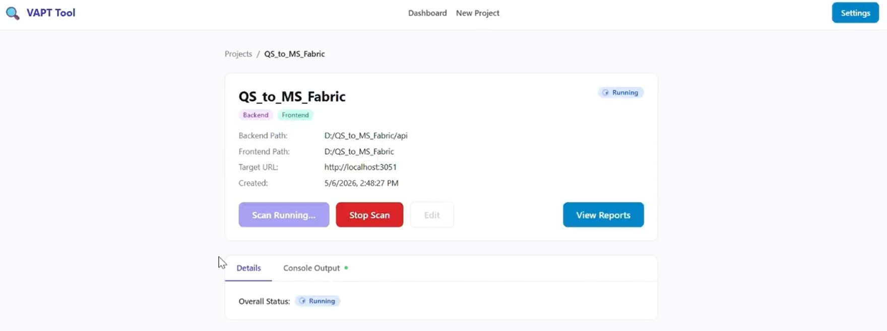
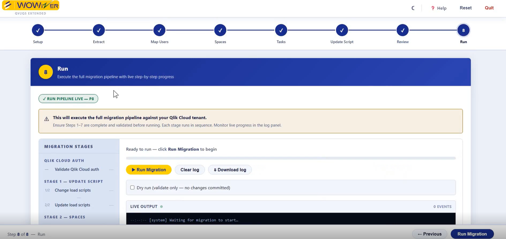
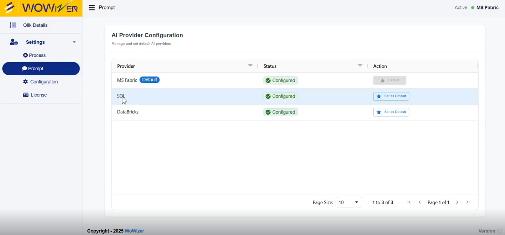
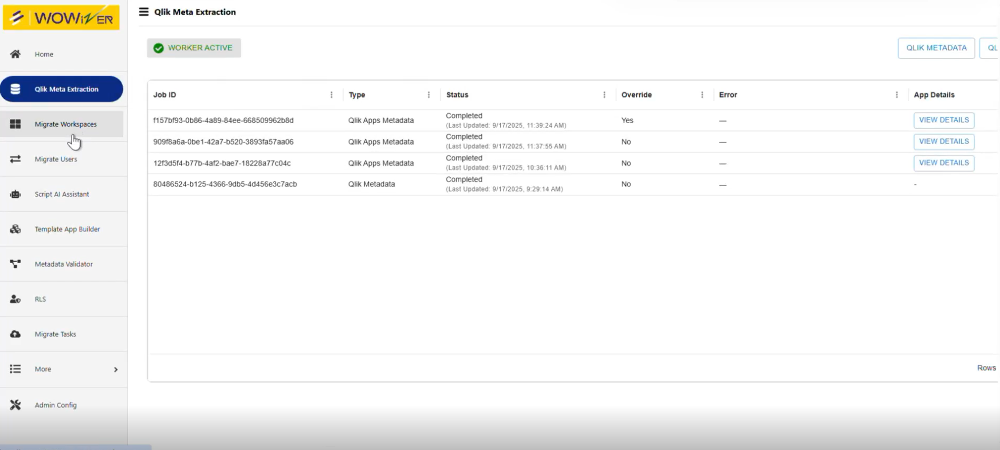
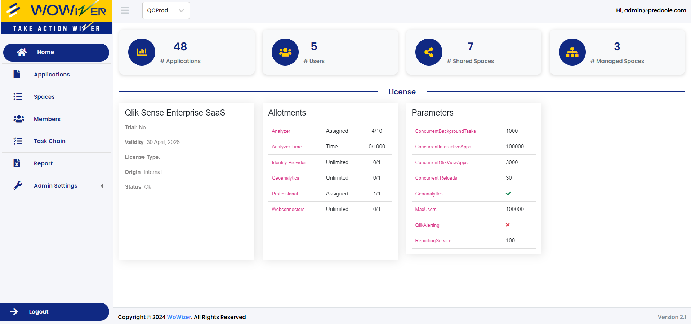
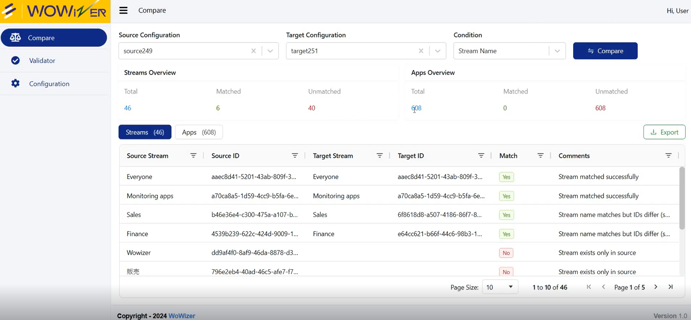
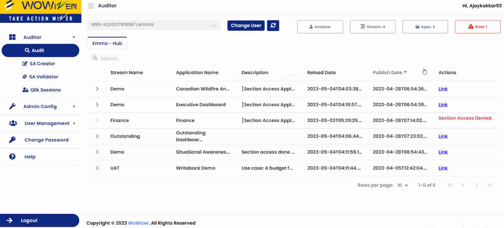
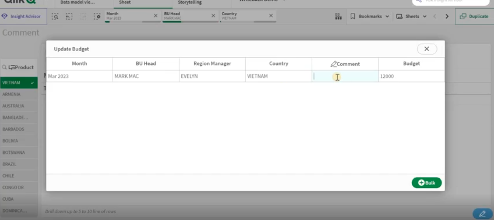

Open to Opportunities
Ajay
Kakkar
10 years turning hard analytics problems into working solutions — from enterprise Qlik products to AI-powered bots and OCR document intelligence.

10 years turning hard analytics problems into working solutions — from enterprise Qlik products to AI-powered bots and OCR document intelligence.
9+
Years Exp.
8
Products Built
20+
Engineers Trained
875
Udemy Learners
5
Qlik Awards
14+
OSS Extensions
About
I don't build features — I design solutions that make things genuinely easier for the people using them. At Wowizer.ai (Predoole Analytics), I lead Team Wowizer (5 engineers), building enterprise Qlik products across the full platform stack: QlikView, Qlik Sense Enterprise, and Qlik Cloud.
From Qlik migration & conversion tools to AI bots to cloud migration accelerators — every product starts the same way: find where technology is making someone's work harder than it needs to be, then remove that friction.
"Solution to make life easy for the user."
The filter every decision runs through
Qlik Platform
AI & Integration
Code & Web
Independent Open Source Work
14+ custom Qlik Sense extensions built independently — Variable Button, Popup Chart, Side Filter, KPI Objects, Date Range Picker, Sheet Level Access and more. Used by the Qlik community globally.
View on GitHubAI Work
Building retrieval-augmented architectures before RAG became the industry term. Now going deeper with certified systems and production AI features.
Built a Retrieval-Augmented Generation pipeline — grounding LLM responses in a custom knowledge base for accurate, context-aware answers instead of hallucinations.
Scanning PAN cards and Aadhaar cards to extract structured KYC data automatically — replacing manual entry, validating vendors before enrollment, and dramatically simplifying the onboarding UX.
Conversational AI on top of Qlik's Associative Engine — users ask data questions in plain English and get chart-level answers instantly. One product, two delivery channels: Microsoft Teams or WhatsApp, depending on where your team lives.

Self-hosted security scanning platform that unifies SCA (OWASP Dependency Check), DAST (OWASP ZAP), and SAST (Semgrep) into a single local dashboard — replacing fragmented CLI tools with one scan-to-report interface. Windows-native, fully offline, no cloud dependency.
Products I Architected
As solutions architect and R&D lead at Wowizer.ai, I define the problem, design the solution, and lead Team Wowizer (5 engineers) to ship it.

Migrates the operational layer of a QlikView deployment to Qlik Cloud — reload tasks, user access, spaces, load scripts, and data connections. Complements QV2QS (app content). Ships as a single Windows .exe with no installation required.

AI-powered migration platform that converts Qlik Sense Client Managed load scripts into production-ready assets for Microsoft Fabric, Snowflake, Databricks, and SQL warehouses — automating pipelines, notebooks, semantic models, and medallion architecture in minutes.

UI-based tool that automates the full Qlik Sense Enterprise → Qlik Cloud migration journey — users, apps, data connections, task chains, and private content — across multiple tenants, with backup, UAT, and a complete audit trail.

Slash 60–70% of migration effort per module with WOWizer's automation-led accelerators. Converts Qlik scripts, datasets, and dashboards to Power BI with built-in validation — without disrupting your business. A structured 5-phase methodology: Discovery → Assessment → Planning → Migration → Validation.

The administrative control layer that Qlik Cloud's native QMC doesn't yet provide. Manage multiple Qlik Cloud tenants from one interface — automate task chains, backup & restore apps as QVF files, generate audit reports, and move apps across environments without touching Qlik's UI.

Enterprise-grade comparison engine for Qlik Sense Client-Managed. Validates DEV → TEST → PROD migrations in minutes — detecting data model, row count, sheet, KPI, chart, and expression-level differences with machine precision. Two scan modes: Quick Scan (5–8 min health check) and Full Scan (object-by-object forensic diff with Excel audit export).

Enterprise data security and access governance tool for Qlik Sense Client-Managed. Audits QMC security rules and Section Access (row-level restriction) in one place — so you know exactly who sees what data before it reaches production. Catch compliance issues in UAT before they become escalations.

Qlik Sense extension enabling users to edit and submit data directly from dashboards — writing back to a dedicated PostgreSQL table with automatic app reload. Supports Session Access for row-level security, concurrent multi-user edits, and two approval workflows (Direct Approve or Approve / Reject / Pending).
Career
Predoole Analytics · Wowizer.ai · KADAC.ai
Medly Pharmacy · Pune
Clay Logix Pvt. Ltd. · Mumbai
PHP · JavaScript · MySQL
Knowledge Sharing
875 Udemy learners · 20+ engineers trained · YouTube · Medium · Qlik Community
Build custom Qlik Sense extensions from zero — Extension API, HTML/CSS, JavaScript, Qlik object model.
View Course
Automate Qlik report generation and distribution — from basics to scheduled delivery for business users.
View Course
Took 20+ Predoole-hired freshers from zero to independently productive in Qlik Sense Enterprise & Cloud (2023–2024). That cohort now delivers on their own.
Interactive upgrade path calculator for all 33 Qlik Sense Enterprise versions (2016–2023). Covers prerequisites checklist, safe mode version-to-version paths, PostgreSQL migration routes, and EOS dates. Built for the Qlik community.
Recognition
5 awards across 6 years — from Qlik India, Qlik Global, and the community
Global community challenge — school education analysis project
2018 · Qlik GlobalRecognised for innovation in client delivery work
Oct 2019 · Clay LogixBest Innovation — nationally judged by Qlik India
Dec 2019 · Qlik IndiaPersonally recognised by Michael Tarallo, Qlik's Global Community Manager
2019 · Qlik Employee RecognitionQlik Community monthly lead recognition — sustained excellence, 5 years on
Nov 2023 · Qlik CommunityRecognition span
2018 → 2023
Not a one-time burst — sustained recognition across 6 years from different parts of the Qlik ecosystem.
Learning
Edureka · Mar 2026
ID: XR8S5EHF8SCM
Microsoft · Dec 2025
ID: DA9LNBECGNYZ
Microsoft · Dec 2025
ID: 06TNP8NRYRU4
deeplearning.ai / Coursera · 2020
LearnQuest / Coursera · 2020
Coursera · 2020
Udemy
Udemy · 2020
McMaster / UCSD · 2020
Udemy · Jul 2018
ID: UC-X4RDXU18
UC Davis / Coursera
Coursera
University of Toronto / Coursera
Coursera
Coursera
Get In Touch
Open to Qlik solutions architect roles, senior consultant opportunities, and AI-augmented analytics collaborations.
ajaykakkar93@gmail.com
Phone
+91 95944 11469
linkedin.com/in/ajaykakkar93
Location
Mumbai, India
Open to remote & hybrid roles